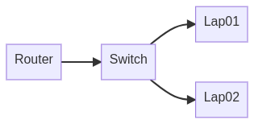

Portable Testbed
Contents
Portable Testbed#
While many things can (and should) be virtualized, I wanted to build a small testbed wherein I could validate not only my logical access to various things, but also confirm some physical attacks/interactions. Additionally, this will allow others in my team to participate and train once I get a few of the kinks worked out. This section of the documentation describes the environment and some of the uses.
Testbed Layout#

Router#
The network router in the testbed is an used Netgear Nighthawk R7000. The extnernal/WAN interface is intended to be connected to whatever local network you are working on and the router should provide a reasonable level of isolation between your LAN and the possibly vulnerable machines inside the testbed.
Configuration#
Firmware Version:
V1.0.11.106_10.2.100Username:
adminPassword: standard lab password
Internal IP:
192.168.89.1
Switch#
We decided to use a Netgear GS724T 24-Port switch as the primary backbone for the testbed. We had one available and it allows us to, should we choose, configure a span port for traffic monitoring.
Configuration#
Firmware Version:
6.3.1.19, B1.0.0.4Password:
passwordIP Address:
192.168.89.2
Lap01#
The intent is to configure a series of virtual machines on this laptop that will serve as software targets for various purposes. At this point, it is a base system with the standard Ubuntu version of KVM installed. The machine is a used HP Z-Book that is approximately 6 years old.
Configuration#
OS:
Ubuntu 20.04 LTSHostname:
capture01Username:
argodevPassword: standard lab password
CPU:
8 coresRAM:
24 GBIP Address:
192.168.89.3(DHCP Reservation)
Lap02#
The intent is to configure a series of virtual machines on this laptop that will serve as software targets for various purposes. At this point, it is a base system with the standard Ubuntu version of KVM installed. The machine is a used HP Z-Book that is approximately 6 years old.
Configuration#
OS:
Ubuntu 20.04 LTSHostname:
capture02Username:
argodevPassword: standard lab password
CPU:
8 coresRAM:
24 GBIP Address:
192.168.89.4(DHCP Reservation)
Network Space#
As detailed above within the configuration blocks for each device, the network is fairly straight-forward. The R7000 is configured as a DHCP server with a number of static reservations
Devices:#
router:
192.168.89.1switch:
192.168.89.2lap01:
192.168.89.3lap02:
192.168.89.2
Wireless Network#
There exists two wireless networks configured that allow access to the testbed network. The only difference between the two is the RF band (2.4 GHz vs. 5 GHz).
Configuration#
2.4 GHz ssid:
CAUTION_HEAVY_25.0 GHz ssid:
CAUTION_HEAVY_5Password: standard lab password
Jump Server#
In order to make some of the attacks in this environment a little more controlled, I configured a publicly-accessible jump server. This is simply a “droplet” (small virtual private server) hosted by Digital Ocean. I selected one of the smallest devices (~$6/mo). It is mapped to a domain that I own and is reachable at george.bitpredator.com. It is only accessible via ssh and requires pub/priv key authentication (no passwords allowed).
Configuration#
RAM:
1 GBCPU:
1 Intel vCPUHDD:
25 GBLocation:
NYC1